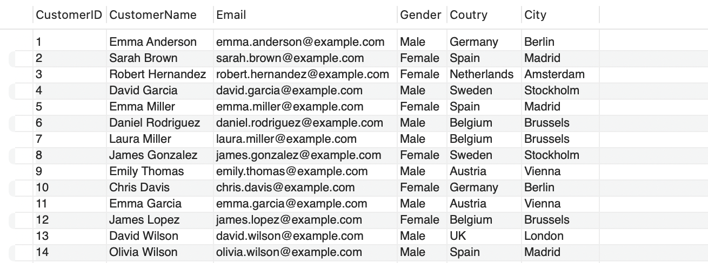
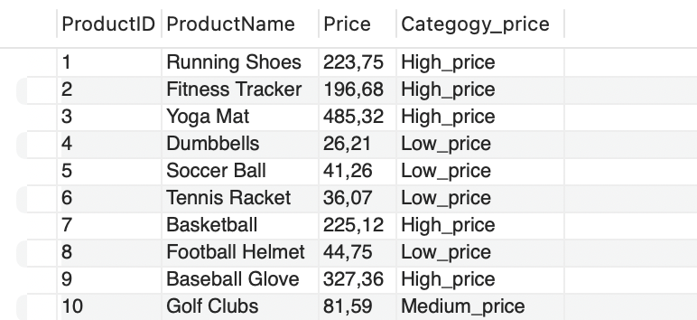
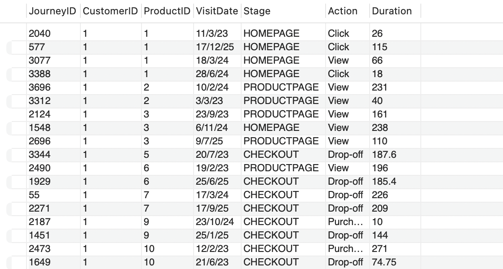
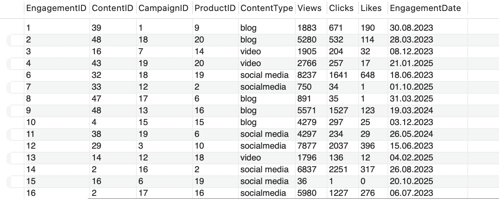

Marketing Analytics Project
Phân tích chi tiết chiến dịch Marketing và phản hồi khách hàng để cải thiện tỷ lệ tương tác và chuyển đổi cho doanh nghiệp bán lẻ trực tuyến ShopEasy.
Business Case
ShopEasy – một doanh nghiệp bán lẻ trực tuyến – đang gặp tình trạng suy giảm mức độ tương tác của khách hàng (customer engagement) và tỷ lệ chuyển đổi (conversion rate), mặc dù đã triển khai nhiều chiến dịch marketing online mới.
Business Problems
- • Suy giảm mức độ tương tác của khách hàng (customer engagement)
- • Suy giảm tỷ lệ chuyển đổi sản phẩm (conversion rates)
- • Tối ưu và đánh giá hiệu quả các chiến dịch quảng cáo
- • Phân tích phản hồi khách hàng (customer reviews)
Project Goals
- • Tăng tỷ lệ chuyển đổi
- • Nâng cao mức độ tương tác khách hàng
- • Tối ưu hiệu quả các chiến dịch quảng cáo
- • Cải thiện điểm đánh giá khách hàng
Bước 1: SQL
Xử lý dữ liệu thô
Bước 2: Python
Phân tích cảm xúc
Bước 3: Power BI
Trực quan hóa dữ liệu
Bước 4: Kết luận
Tổng kết và đề xuất
Thu thập và làm sạch dữ liệu bằng SQL
Mô tả khái quát về các bước xử lý dữ liệu bằng SQL
Trong dự án này, dữ liệu được xử lý và làm sạch bằng SQL nhằm đảm bảo tính chính xác, nhất quán và sẵn sàng cho các bước phân tích tiếp theo:
- Kết hợp bảng customers và geography để bổ sung thông tin vị trí (quốc gia, thành phố) cho khách hàng
- Phân loại sản phẩm theo mức giá (thấp, trung bình, cao) bằng CASE WHEN
- Xử lý bảng customer_journey: loại bỏ dữ liệu trùng lặp và thay thế giá trị NULL bằng trung bình theo ngày
- Chuẩn hóa bảng engagement_data: định dạng lại ContentType, tách Views/Clicks và chuẩn hóa ngày
# Gộp theo ID geography để tạo ra bảng mới chứa cả 2 thông tin SELECT CustomerID, CustomerName, Email, Gender, Coutry, City FROM customers AS cu LEFT JOIN geography AS ge ON ge.GeographyID = cu.GeographyID;

# Nhóm theo giá tiền products table, bỏ category SELECT ProductID, ProductName, Price, CASE WHEN price < 50 THEN 'Low_price' WHEN price BETWEEN 50 AND 100 THEN 'Medium_price' ELSE 'High_price' END AS Categogy_price FROM products;

# Xác định và kiểm tra các bản ghi duplicate WITH DuplicateRecords AS ( SELECT JourneyID, CustomerID, ProductID, VisitDate, Stage, Action, Duration, ROW_NUMBER() OVER ( PARTITION BY CustomerID, ProductID, VisitDate, Stage, Action ORDER BY JourneyID ) AS row_num FROM customer_journey ) SELECT * FROM DuplicateRecords -- WHERE row_num > 1 -- bật dòng này nếu chỉ muốn xem duplicate ORDER BY JourneyID;
# Làm sạch dữ liệu và xử lý NULL + chuẩn hóa SELECT JourneyID, CustomerID, ProductID, VisitDate, Stage, Action, -- thay NULL bằng avg theo ngày COALESCE(Duration, avg_duration) AS Duration FROM ( SELECT JourneyID, CustomerID, ProductID, VisitDate, -- chuẩn hóa Stage UPPER(Stage) AS Stage, Action, Duration, -- tính avg duration theo ngày AVG(Duration) OVER (PARTITION BY VisitDate) AS avg_duration, -- đánh số để loại duplicate ROW_NUMBER() OVER ( PARTITION BY CustomerID, ProductID, VisitDate, UPPER(Stage), Action ORDER BY JourneyID ) AS row_num FROM customer_journey ) AS subquery WHERE row_num = 1;

# Chuẩn hoá và làm sạch bảng engagement_data table SELECT EngagementID, ContentID, CampaignID, ProductID, UPPER(REPLACE(ContentType, 'Socialmedia', 'Social Media')) AS ContentType, LEFT(ViewsClicksCombined, CHARINDEX('-', ViewsClicksCombined) - 1) AS Views, RIGHT(ViewsClicksCombined, LEN(ViewsClicksCombined) - CHARINDEX('-', ViewsClicksCombined)) AS Clicks, FORMAT(CONVERT(DATE, EngagementDate), 'dd.MM.yyyy') AS EngagementDate FROM engagement_data WHERE ContentType != 'Newsletter';

Sentiment Analysis (Python)
Tổng quan về quá trình xử lý và phân tích dữ liệu bằng Python
Trong dự án, Python được sử dụng để tiếp tục xử lý, phân tích và trực quan hóa dữ liệu sau khi đã làm sạch bằng SQL:
- Sử dụng thư viện Pandas để load dữ liệu, kiểm tra cấu trúc và xử lý các giá trị thiếu, sai
- Sử dụng thư viện NLTK để phân tích đánh giá của khách hàng
- Phân loại các đánh giá theo từng nhóm khác nhau
1 Import thư viện & Đọc dữ liệu
# Import thư viện dùng để phân tích cảm xúc import pandas as pd import nltk nltk.download('vader_lexicon') from nltk.sentiment import SentimentIntensityAnalyzer sia = SentimentIntensityAnalyzer() # Đọc dữ liệu từ file CSV df = pd.read_csv('customer_review.csv') df.head(10)

2 Làm sạch dữ liệu (Data Cleaning)
# 1. Clean ReviewText (xóa khoảng trắng thừa) df['ReviewText'] = df['ReviewText'].str.strip() \ .str.replace(r'\s+', ' ', regex=True) # Xoá khoảng trắng # 2. Convert ReviewDate → datetime chuẩn df['ReviewDate'] = pd.to_datetime(df['ReviewDate'], dayfirst=True) df.head()

3 Phân tích cảm xúc & Phân loại
# Tạo file csv mới sau khi làm sạch df.to_csv('clean_customer_review.csv', index=False) df1 = pd.read_csv('clean_customer_review.csv') # Phân loại dựa trên điểm sentiment và rating def classify_sentiment(score, rating): if score > 0.05: if rating >= 4: return 'tích cực' elif rating == 3: return 'khá tích cực' else: return 'khá tiêu cực' elif score < -0.05: if rating <= 2: return 'tiêu cực' elif rating == 3: return 'khá tiêu cực' else: return 'khá tích cực' else: if rating >= 4: return 'tích cực' elif rating <= 2: return 'tiêu cực' else: return 'trung lập' # Áp dụng tính toán df1['sentiment_score'] = df1['ReviewText'].apply(lambda x: sia.polarity_scores(x)['compound']) df1['sentiment_label'] = df1.apply(lambda row: classify_sentiment(row['sentiment_score'], row['Rating']), axis=1) df1.to_csv('clean_customer_review.csv', index=False) df1.head(10)

4 Kết luận từ phân tích Python
Qua quá trình tiền xử lý và phân tích cảm xúc (Sentiment Analysis) bằng thư viện NLTK VADER, chúng ta đã đạt được các kết quả quan trọng sau:
- Làm sạch dữ liệu thành công: Dữ liệu văn bản thô đã được loại bỏ khoảng trắng thừa và chuẩn hóa định dạng thời gian, tránh lỗi khi đưa vào Power BI.
- Lượng hóa thái độ khách hàng: Điểm cảm xúc (compound score) đã được trích xuất cho từng đánh giá, cung cấp góc nhìn đa chiều thay vì chỉ dựa vào số sao (rating).
-
Phân loại nhãn dán thông minh: Việc kết hợp giữa
sentiment_scorevàratinggiúp xử lý được các trường hợp "sarcasm" (mỉa mai) hoặc mâu thuẫn giữa điểm số và nội dung text. -
Bộ dữ liệu
clean_customer_review.csvđã hoàn toàn sạch sẽ và sẵn sàng để tạo Insight trên Dashboard.
1. Tổng quan

• Tỷ Lệ Chuyển Đổi Giảm: Tỷ lệ chuyển đổi đã phục hồi mạnh mẽ vào tháng 12, đạt 10,2%, mặc dù có sự sụt giảm xuống 5,0% vào tháng 10.
• Mức Độ Tương Tác Của Khách Hàng Giảm:
- Lượt xem giảm dần trong năm.
- Tỷ lệ nhấp đạt 15,37% cho thấy vẫn hiệu quả.
• Phân Tích Phản Hồi Khách Hàng:
- Điểm trung bình ~3,7 thấp hơn mục tiêu 4,0.
2. Phân tích tỉ lệ chuyển đổi
• Xu hướng biến động theo tháng, cao ở tháng 2 và 7.
• Thấp nhất: Tháng 5 (4,3%) → cần cải thiện marketing.
• Cao nhất: Tháng 1 (18,5%) nhờ sản phẩm mùa vụ.
3. Phân tích mức độ tương tác
• Lượt xem giảm từ tháng 8 trở đi.
• CTR thấp → cần nội dung hấp dẫn hơn.
• Blog hiệu quả nhất, social & video ổn định.
4. Phân tích phản hồi khách hàng
• Đa số đánh giá 4-5 sao → tích cực.
• 82 đánh giá tiêu cực → cần cải thiện.
• Cơ hội: chuyển mixed sentiment → positive.
Kết luận & Kế hoạch Hành động
Dựa trên các Insight trích xuất được từ toàn bộ luồng dữ liệu (SQL xử lý thô → Python phân tích cảm xúc → Power BI trực quan hóa), chúng tôi đề xuất các chiến lược hành động sau đây để thúc đẩy doanh thu cho ShopEasy:
1. Tối ưu hóa phễu chuyển đổi
Tập trung nguồn lực và ngân sách quảng cáo lớn nhất vào tháng 1 và tháng 12. Đối với các tháng sụt giảm mạnh như tháng 5 và tháng 10, cần tung ra các gói flash-sale hoặc bundle kích cầu.
2. Cải thiện chất lượng nội dung
CTR đạt 15,37% nhưng lượt views giảm dần. Đề xuất làm mới format nội dung truyền thông, đặc biệt là đầu tư mạnh hơn vào định dạng Video ngắn vốn đang có độ giữ chân tốt hơn Blog tĩnh.
3. Chiến lược Định giá Sản phẩm
Sản phẩm phân khúc giá Low (<50$) và Medium (50$-100$) chiếm đa số tệp khách hàng. Cần sử dụng nhóm sản phẩm này làm "Sản phẩm phễu" (Loss Leader) để thu hút traffic vào website.
4. Nâng cao trải nghiệm & CSKH
Thiết lập hệ thống Auto-Alert (cảnh báo tự động) để chăm sóc ngay lập tức 82 khách hàng có đánh giá 'Tiêu cực'. Đồng thời gửi voucher xin lỗi để chuyển hóa nhóm 'Trung lập' thành 'Tích cực'.